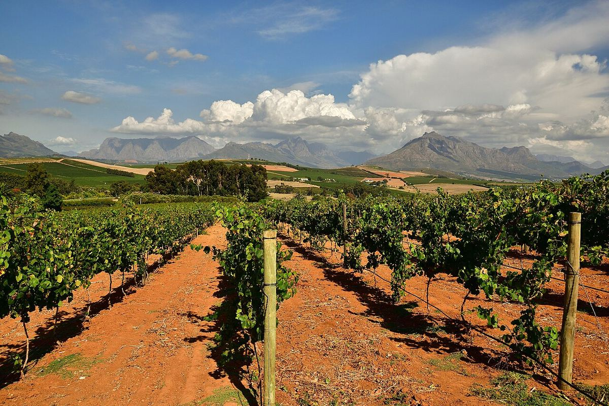

Afrique du Sud
L’Afrique du Sud associe plus de trois siècles et demi d’histoire viticole à une scène moderne très dynamique. Le Cap-Occidental produit aussi bien du cabernet-sauvignon et du pinotage que du chenin blanc de vieilles vignes, son cépage le plus planté.

Histoire
La viticulture sud-africaine est née avec l’établissement fondé au Cap en 1652 par la Compagnie néerlandaise des Indes orientales sous le commandement de Jan van Riebeeck, comme escale sur la route de l’Asie. Van Riebeeck nota dans son journal la première vinification du Cap en février 1659. En 1685, le gouverneur Simon van der Stel fonda le domaine de Constantia, au sud de l’actuelle ville du Cap, et à partir de 1688 arrivèrent des huguenots français fuyant les persécutions religieuses, qui s’installèrent dans la vallée de Franschhoek et apportèrent leur savoir-faire agricole. Aux XVIIIe et XIXe siècles, les vins doux de Constantia connurent une immense renommée dans les cours et sur les tables d’Europe.
L’oïdium puis, à partir de 1886, le phylloxéra ruinèrent une grande partie du vignoble. La replantation qui suivit provoqua une surproduction chronique, et en 1918 fut fondée la coopérative KWV qui, pendant des décennies, régula le marché, fixa prix et quotas et orienta la production vers le volume, le brandy et les vins mutés. En 1925, le professeur Abraham Izak Perold, de l’université de Stellenbosch, obtint le pinotage en croisant le pinot noir et le cinsault, cépage alors appelé localement hermitage. Le système Wine of Origin fut créé en 1973. Après la fin de l’apartheid et les élections démocratiques de 1994, le pays s’ouvrit aux marchés internationaux, le secteur fut libéralisé et une nouvelle génération de producteurs indépendants apparut, qui a remis en valeur de vieilles vignes, exploré de nouvelles zones et donné un grand élan à la qualité.
Climat et sols
Presque tout le vignoble se trouve dans la province du Cap-Occidental, autour des 33e et 34e parallèles sud. Le climat est méditerranéen, avec des hivers pluvieux et des étés secs et chauds, tempéré par l’influence de deux océans : le courant froid de Benguela, qui remonte la côte atlantique, rafraîchit les zones littorales, et le vent du sud-est, appelé Cape Doctor, ventile les vignes en été. Les montagnes créent une grande diversité de pentes et d’expositions. Les sols comptent parmi les plus anciens du monde viticole : granites décomposés, grès de la formation de Table Mountain et schistes de la formation de Malmesbury.
Cépages et styles
Le chenin blanc, traditionnellement appelé steen, est le cépage le plus planté. Il est vinifié dans des styles allant de blancs frais et fruités à des vins complexes de vieilles vignes fermentés en barrique, qui ont valu au pays un grand prestige. Parmi les rouges se distinguent le cabernet-sauvignon et les assemblages de type bordelais, la syrah, étiquetée ici shiraz ou syrah selon le style, et le pinotage lui-même. On cultive aussi le sauvignon blanc, le chardonnay, le merlot et le cinsault, ce dernier revalorisé dans les vieilles vignes. Les effervescents de méthode traditionnelle portent la mention Méthode Cap Classique, et Constantia perpétue la tradition des vins doux de muscat.
Réglementation
Le système Wine of Origin divise le territoire en unités géographiques, régions, districts et circonscriptions plus petites appelées wards, et certifie l’origine, le cépage et le millésime indiqués sur l’étiquette. De nombreux domaines produisent des « Estate Wines » à partir de raisins de leurs propres vignes. L’Old Vine Project a promu le label Certified Heritage Vineyards pour identifier les vins issus de vignes d’au moins 35 ans. Le secteur a également encouragé des programmes de durabilité, de protection de la flore indigène et de transformation sociale.
Régions et appellations
Stellenbosch
Wine of Origin (WO) · Stellenbosch, à l’est du Cap, est le district viticole le plus connu d’Afrique du Sud et le centre de son enseignement et de sa recherche œnologiques. Il se distingue par le cabernet-sauvignon, les assemblages bordelais, le pinotage et le chenin blanc.
Swartland
Wine of Origin (WO) · Le Swartland, au nord du Cap, est passé du statut de zone de céréales et de vin en vrac à celui de foyer du renouveau du vin sud-africain, avec de vieilles vignes en gobelet non irriguées de chenin blanc, de syrah et de cépages méditerranéens.
Constantia
Wine of Origin (WO) · Constantia, sur la péninsule du Cap au sud de la ville du Cap, est la plus ancienne zone viticole d’Afrique du Sud. Célèbre aux XVIIIe et XIXe siècles pour ses vins doux, elle se distingue aujourd’hui aussi par ses blancs de climat frais.
Franschhoek
Wine of Origin (WO) · Franschhoek, le « coin des Français », est une vallée entourée de montagnes à l’est de Stellenbosch, où s’installèrent les huguenots à la fin du XVIIe siècle. Elle est connue pour ses vieilles vignes de sémillon, ses effervescents et sa gastronomie.
Paarl
Wine of Origin (WO) · Paarl, au nord de Stellenbosch, est l’un des districts historiques du Cap, dominé par les grands dômes de granite qui lui donnent son nom. Il produit une vaste gamme de vins, surtout des rouges de climat chaud de syrah, de pinotage et de cabernet-sauvignon, ainsi que du chenin blanc.
Hemel-en-Aarde
Trois wards (WO) du district de Walker Bay · Ensemble de vallées près d’Hermanus, sur la côte sud de l’Afrique du Sud, divisé en trois wards. Rafraîchi par l’océan Atlantique, c’est la zone sud-africaine de référence pour le pinot noir et le chardonnay.
Elgin
Wine of Origin (WO), district de la région Cape South Coast · Plateau élevé au sud-est du Cap, traditionnellement consacré aux pommiers et aujourd’hui l’une des zones viticoles les plus fraîches d’Afrique du Sud. Il se distingue par des sauvignons blancs, chardonnays, pinots noirs et syrahs de climat frais.
Walker Bay
Wine of Origin (WO), district de la région Cape South Coast · District côtier autour d’Hermanus et de la baie de Walker, au sud-est du Cap. Il regroupe plusieurs wards, dont les trois de Hemel-en-Aarde, et est connu pour ses pinots noirs, chardonnays et sauvignons blancs de climat frais.